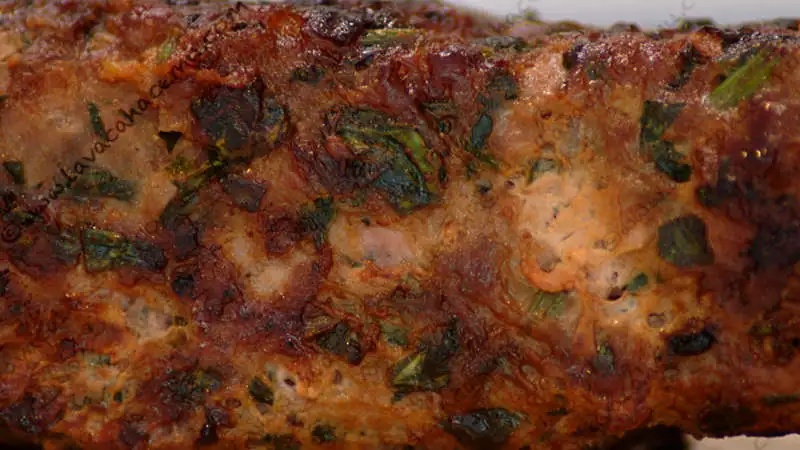
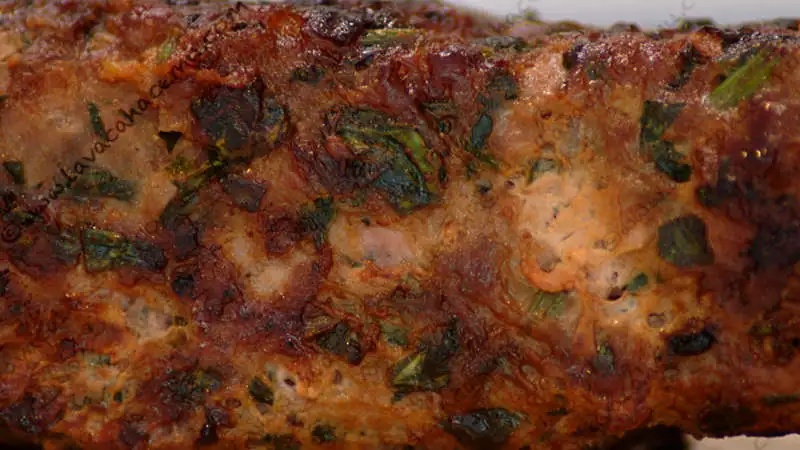

Kofta Kebab
 
 {kind=link}
Kofta o kafta, como le llamen en la región de donde venga la receta, estas brochetas de carne molida son una excelente alternativa a un pastel de carne (blegh)... y si lo acompañas de una ensalada verde así como le hicimos, es una opción saludable a la hamburguesa con papas o los tacos de picadillo que podrías haber hecho. La receta es sencilla, aunque un poco laboriosa porque todo lo que no está molido tiene que picarse en cubos pequeños, pequeños pequeños.. ahora... la receta:
Ingredientes
- 1/2 kg carne de res molida (de la "especial", para que tenga grasita :D)
- 1/2 kg carne de borrego molida (se puede sustituir por carne de puerco, aunque no sea nada Kosher o halal o ya de plano con carne de res)
- 1 manojo de perejil picado finamente
- 1 cebolla mediana picada finamente
- 1 cdta all-spice o pimienta gorda
- 1/2 cdta paprika o pimentón
- 1/2 cdta pimienta negra molida
- 1/2 cdta comino molido
- sal al gusto
Procedimiento
El procedimiento no podría ser mas sencillo: mezcla todos los ingredientes y haciendo formas cilíndricas o esféricas se asan con ayuda de las brochetas.